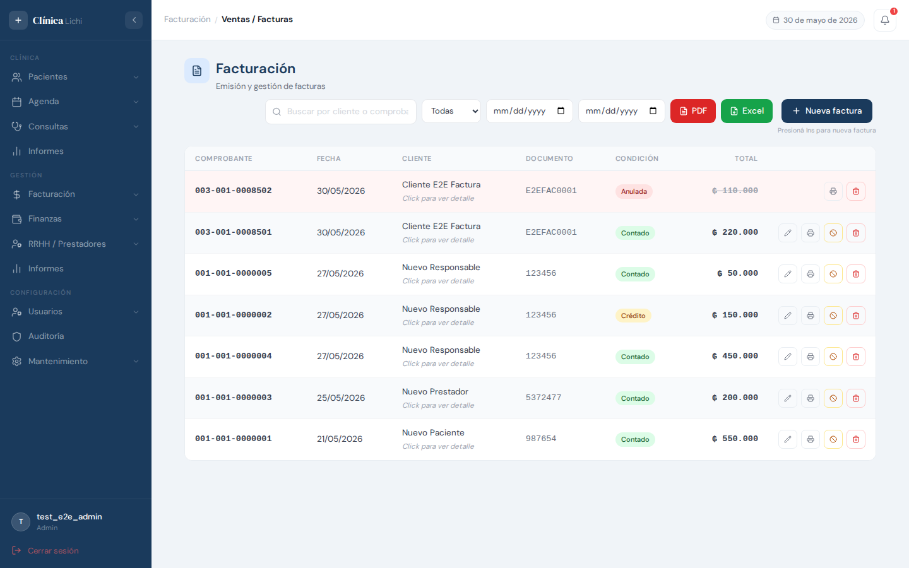
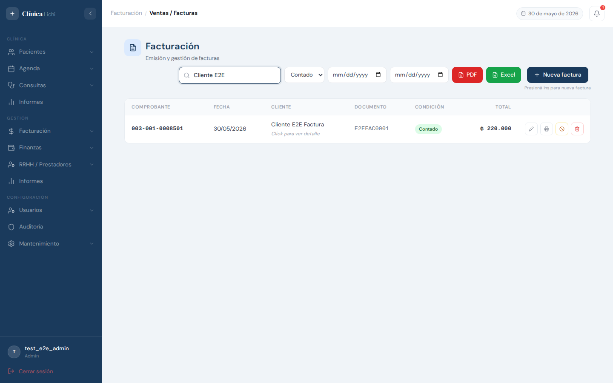
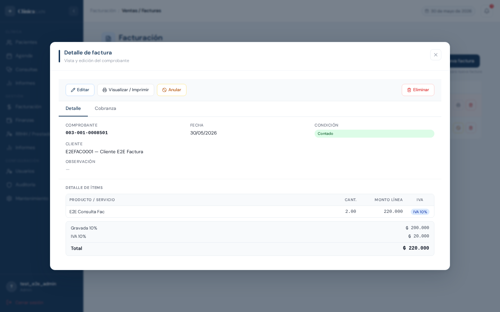
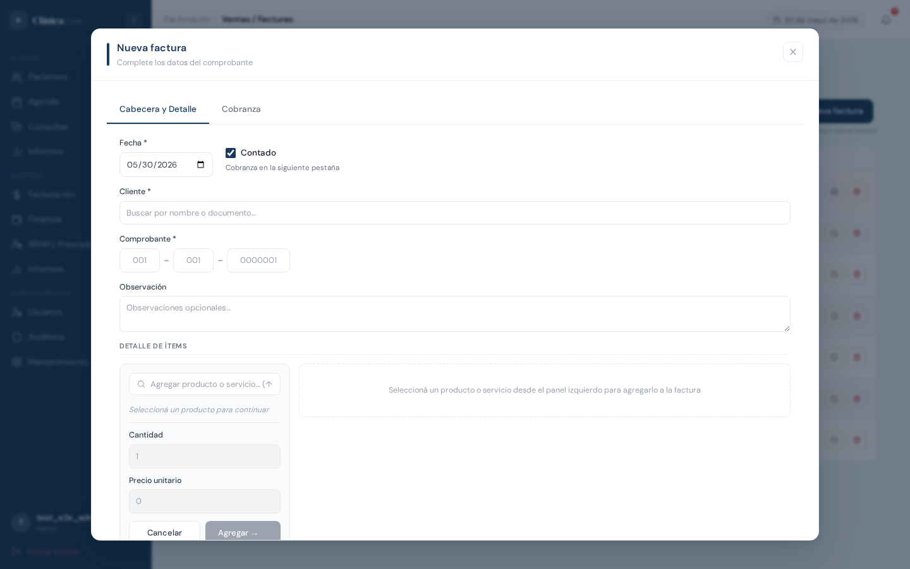
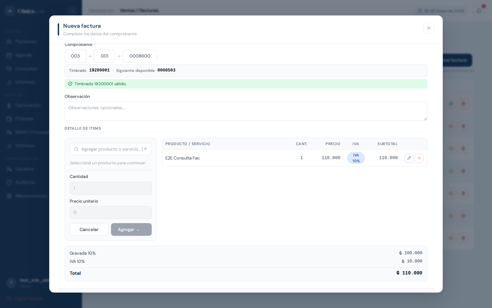
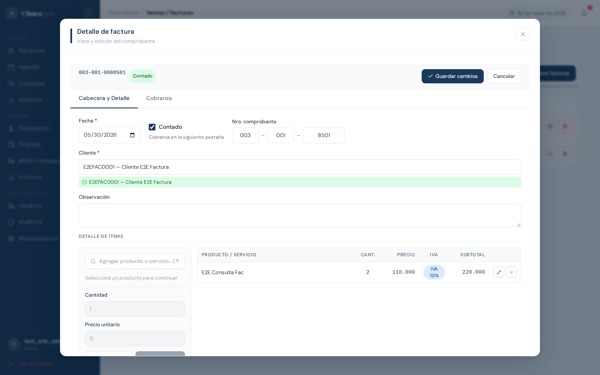
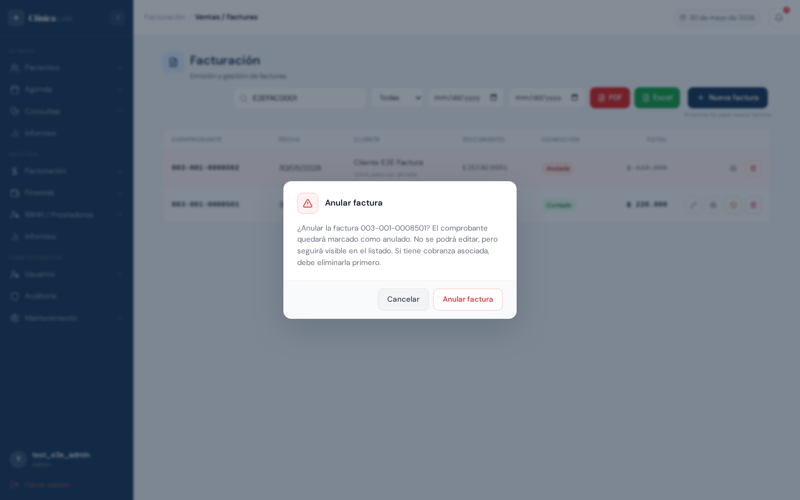
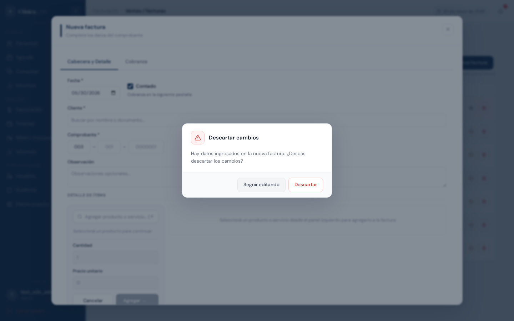

Descripción del módulo
El módulo Facturación permite emitir, consultar y gestionar los comprobantes fiscales de la clínica. Cada factura queda vinculada a un cliente (persona), a un timbrado vigente y a uno o varios productos o servicios. Según la condición de venta elegida, el sistema genera automáticamente los movimientos de caja (venta al contado) o las cuotas a cobrar (venta a crédito).
El módulo contempla dos tipos de operación fiscales:
- Contado: el pago se registra al momento de emitir la factura. Se generan movimientos en caja.
- Crédito: el pago se difiere en cuotas. Se genera una cuenta a cobrar por cada cuota pactada.
Permisos por rol
| Acción | Administrador | Recepcionista | Médico | Secretaria médico |
|---|---|---|---|---|
| Ver listado de facturas | ✅ | ✅ | ✅ | — |
| Ver detalle de una factura | ✅ | ✅ | ✅ | — |
| Emitir nueva factura | ✅ | ✅ | — | — |
| Editar una factura | ✅ | ✅ | — | — |
| Anular una factura | ✅ | ✅ | — | — |
| Eliminar una factura | ✅ | — | — | — |
| Descargar reportes PDF / Excel | ✅ | ✅ | ✅ | — |
| Ver dashboard mensual | ✅ | ✅ | ✅ | — |
Acceder al módulo
El módulo de Facturación se encuentra en el menú lateral bajo el grupo Facturación.
- Iniciá sesión en el sistema con tu usuario y contraseña.
- En el menú lateral izquierdo, hacé clic en Facturación para expandir el grupo.
- Seleccioná Ventas / Facturas dentro del grupo.
- La pantalla principal carga automáticamente con el listado de facturas registradas.
Pantalla principal — listado

La pantalla principal tiene dos zonas:
- Izquierda: ícono del módulo junto al título Facturación y el subtítulo Emisión y gestión de facturas.
- Derecha: buscador de texto, filtro de condición, selectores de fecha, botón PDF (rojo), botón Excel (verde) y botón + Nueva factura (azul), todos en una sola fila. Debajo del botón Nueva factura aparece el atajo de teclado disponible.
Columnas de la tabla
| Columna | Contenido |
|---|---|
| Comprobante | Número de comprobante en formato SUC-EXP-NNNNNNN (ej: 001-001-0000123), en tipografía monoespaciada y negrita. |
| Fecha | Fecha de emisión del comprobante. |
| Cliente | Nombre o razón social del cliente. Debajo aparece el texto "Click para ver detalle" indicando que la fila es interactiva. |
| Documento | Número de documento del cliente (cédula o RUC). Esta columna se oculta en pantallas pequeñas. |
| Condición | Contado o Crédito según la condición de venta. Las facturas anuladas muestran Anulada en lugar de la condición. |
| Total | Monto total del comprobante en guaraníes (₲), con separador de miles. Las facturas anuladas muestran el monto tachado en gris. |
| Acciones | Botones de acción rápida: Editar (lápiz), Visualizar / Imprimir (impresora), Anular (prohibido) y Eliminar (papelera). Los botones Editar y Anular no aparecen en facturas ya anuladas. |
Filas anuladas
Las facturas anuladas se muestran con fondo rojo suave para distinguirlas visualmente del resto. No se pueden editar ni anular nuevamente.
Buscar y filtrar facturas

Búsqueda por texto
El campo de búsqueda filtra por nombre o razón social del cliente, por número de documento del cliente o por número de comprobante. La búsqueda aplica con un breve retardo automático mientras se escribe; no es necesario presionar Enter.
Filtros disponibles
| Filtro | Opciones | Descripción |
|---|---|---|
| Condición | Todas / Contado / Crédito | Filtra por condición de venta. Por defecto muestra todas. |
| Fecha desde | Selector de fecha | Muestra solo facturas emitidas a partir de esa fecha. |
| Fecha hasta | Selector de fecha | Muestra solo facturas emitidas hasta esa fecha. |
Los filtros se pueden combinar. Por ejemplo: buscar "García" + Condición "Crédito" + Fecha desde "01/05/2026" muestra solo las facturas a crédito del cliente García emitidas desde esa fecha.
Reportes PDF y Excel
El botón PDF (rojo) y el botón Excel (verde), ubicados en la barra derecha junto al buscador, generan informes del listado actual respetando todos los filtros aplicados. El PDF se abre en una nueva pestaña del navegador; el Excel se descarga automáticamente como archivo .xlsx.
Ver detalle de una factura

Al hacer clic en una fila se abre el modal de detalle con la información completa de la factura. Para cerrarlo, hacé clic en la X del encabezado o presioná Escape.
Toolbar de acciones
En la parte superior del modal, la barra de herramientas ofrece:
- Editar — cambia el modal a modo edición (solo si la factura no está anulada).
- Visualizar / Imprimir — abre el PDF de la factura en una nueva pestaña del navegador.
- Anular — solicita confirmación para anular el comprobante (solo si no está anulada).
- Eliminar — solicita confirmación para eliminar el comprobante (solo administradores).
Información mostrada
| Sección | Datos |
|---|---|
| Datos del comprobante | Número de comprobante, fecha, condición de venta (Contado / Crédito), cliente con su documento, y observación si fue ingresada. |
| Detalle de ítems | Tabla con producto/servicio, cantidad, precio unitario, tipo de IVA (IVA 10%, IVA 5% o Exenta) y subtotal de cada línea. Al final muestra los totales: gravada 5%, gravada 10%, IVA 5%, IVA 10% y monto total. |
| Detalle de cobranza (solo contado) | Forma de pago, cuenta de caja/banco y monto de cada pago registrado al momento de emitir. |
| Cuotas a cobrar (solo crédito) | Tabla con número de cuota, fecha de vencimiento, monto de cuota y saldo pendiente. El estado de cada cuota puede ser Pendiente, Pagado o Vencido. |
Navegación entre secciones con tabs
Cuando la factura tiene cobranza o cuotas registradas, aparecen tabs de navegación:
Hacé clic en cada tab para ver la sección correspondiente sin cerrar el modal.
Emitir una nueva factura

- Hacé clic en el botón + Nueva factura (azul) ubicado en el extremo derecho de la barra de herramientas. También podés presionar Ins desde el listado.
- Se abre el modal de emisión. Completá los datos en la pestaña Cabecera y Detalle.
- Agregá los ítems de la factura en la sección Detalle de ítems.
- Si la condición es Contado, pasá a la pestaña Cobranza y registrá el pago.
- Si la condición es Crédito, pasá a la pestaña Cuenta a Cobrar y configurá las cuotas.
- Hacé clic en Emitir factura para guardar el comprobante.

Campos de la pestaña Cabecera
| Campo | Descripción |
|---|---|
| Fecha * | Fecha de emisión. Por defecto toma la fecha del día. Se puede cambiar si la factura corresponde a otro día. |
| Contado | Casilla de verificación. Marcada = venta al contado (requiere cobranza). Desmarcada = venta a crédito (requiere configuración de cuotas). El texto de ayuda debajo indica en qué pestaña continuar. |
| Cliente * | Buscador de personas por nombre o número de documento. Al escribir 2 o más caracteres aparece el listado de sugerencias. Seleccioná el cliente con clic o con las teclas ↑↓ y Enter. |
| Comprobante * |
Número de comprobante dividido en tres campos: Punto sucursal (3 dígitos), Punto expedición (3 dígitos) y Número (7 dígitos). Al completar los tres, el sistema valida automáticamente contra el timbrado vigente y muestra el número sugerido como referencia.
001-001-0001234
El sistema muestra junto al campo el número de timbrado activo y el próximo número disponible. Si el número ingresado ya está en uso o está fuera del rango habilitado, aparece un indicador de error en rojo.
|
| Observación | Campo de texto libre, opcional. Para notas internas o leyendas en el comprobante. |
Sección Detalle de ítems
En la misma pestaña, en la parte inferior, se encuentran los paneles para cargar los productos y servicios de la factura:
- En el panel izquierdo, buscá el producto o servicio escribiendo en el buscador. Aparece el listado con la descripción, grupo e IVA de cada producto.
- Seleccioná el producto. Automáticamente se muestra el tipo de IVA (IVA 10%, IVA 5% o Exenta).
- Completá la Cantidad y el Precio unitario. El subtotal se calcula automáticamente.
- Hacé clic en Agregar → para agregar el ítem a la tabla del panel derecho.
- Repetí el proceso para agregar más ítems. Podés editar o quitar ítems ya agregados desde la tabla.
Pestaña Cobranza (venta al contado)

Cuando la condición es Contado, completá los datos de pago:
| Campo | Descripción |
|---|---|
| Forma de pago | Seleccioná el método: Efectivo, Tarjeta, Transferencia u Otro. Si elegís Tarjeta, aparece un campo adicional para el número de voucher. Si elegís Transferencia, aparece un campo para el número de referencia. |
| Cuenta | Cuenta de caja o banco donde se acredita el pago. |
| Monto | Monto recibido para esta forma de pago. Si se recibe más del total de la factura, el sistema calcula el vuelto automáticamente. |
Podés registrar múltiples formas de pago haciendo clic en + Agregar forma de pago. El resumen al final muestra el total de la factura, el total cobrado y si hay vuelto o falta dinero por cobrar.
Pestaña Cuenta a Cobrar (venta a crédito)
Cuando la condición es Crédito, configurá las cuotas:
| Campo | Descripción |
|---|---|
| Cantidad de cuotas * | Número de cuotas en que se dividirá el total. Mínimo 1. |
| Días entre cuotas * | Intervalo en días entre cada cuota. Por ejemplo, 30 días = cuotas mensuales. |
Al completar ambos campos, aparece automáticamente una vista previa de las cuotas con los montos y fechas de vencimiento calculados.
Atajo de teclado
Desde cualquier campo del formulario de nueva factura, podés presionar F10 para intentar emitir el comprobante sin usar el ratón.
Editar una factura
Hay dos formas de editar una factura:
- Hacé clic en el ícono de lápiz en la columna de acciones de la fila (no abre el detalle previo).
- Abrí el modal de detalle haciendo clic en la fila y luego hacé clic en el botón Editar de la toolbar.
En ambos casos, el modal cambia al modo de edición con los datos del comprobante precargados.
Edición simple (sin cambiar el detalle)
Si solo necesitás corregir la fecha, el cliente o la observación, podés hacerlo sin tocar los ítems. Hacé los cambios y presioná el botón Guardar o F10.
Edición completa (con detalle de ítems)
Si modificás el detalle de ítems (cambiar productos, cantidades o precios), el sistema realiza una actualización completa que también puede afectar:
- La condición de venta (podés cambiar de contado a crédito o viceversa).
- Los totales y la distribución de IVA.
- Los registros de cobranza y movimientos de caja (se reemplazan).
- Las cuotas de la cuenta a cobrar (se reemplazan).
Al guardar, el modal vuelve al modo de vista detalle mostrando los datos actualizados. No se cierra automáticamente; presioná Escape o la X para cerrarlo.
Anular y eliminar facturas
Anular una factura

Para anular una factura:
- Hacé clic en el ícono de prohibido (⊘) en la columna de acciones de la fila, o bien abrí el detalle y hacé clic en Anular en la toolbar.
- Aparece un diálogo de confirmación indicando que el comprobante quedará marcado como anulado y no podrá editarse.
- Hacé clic en Anular factura para confirmar, o en Cancelar para volver sin cambios.
Al anular, el sistema cancela automáticamente:
- Los detalles de ítems de la factura.
- Los registros de cobranza (si era contado).
- Los movimientos de caja generados (si era contado).
- Las cuotas pendientes de la cuenta a cobrar (si era crédito).
Eliminar una factura
Para eliminar una factura:
- Abrí el modal de detalle haciendo clic en la fila.
- Hacé clic en el botón Eliminar en la toolbar del modal.
- Aparece el diálogo de confirmación indicando que se eliminarán también los movimientos de caja vinculados.
- Hacé clic en Eliminar para confirmar.
Diferencia entre anular y eliminar
| Aspecto | Anular | Eliminar |
|---|---|---|
| Visible en listado | Sí, con badge Anulada | No aparece más en el listado |
| Acceso requerido | Admin o Recepcionista | Solo Admin |
| Uso recomendado | Cuando el comprobante fue entregado al cliente y debe quedar registrado como inválido por trazabilidad fiscal | Cuando el comprobante no llegó a entregarse y se cargó por error |
| Recuperación | No es reversible desde la interfaz | No es reversible |
Protección de cambios sin guardar

El sistema protege los datos ingresados en los formularios de emisión y edición. Cuando hay cambios sin guardar y se intenta cerrar el modal, el sistema muestra un diálogo de confirmación:
Cuándo aparece este aviso
La protección se activa cuando:
- Se cierra el modal de nueva factura (con X o botón Cancelar) después de haber completado algún campo.
- Se cierra el modal de edición (con X, Cancelar o Escape) después de haber modificado algún dato.
Opciones del diálogo
| Botón | Acción |
|---|---|
| Descartar | Cierra el modal y descarta todos los cambios. Los datos ingresados se pierden. |
| Seguir editando | Cierra el diálogo y vuelve al formulario para poder guardar o seguir trabajando. |
Mensajes de error frecuentes
| Mensaje o situación | Causa y solución |
|---|---|
| "Timbrado no encontrado." | El ID de timbrado ingresado no existe en el sistema. Verificá que el número de punto de sucursal y expedición correspondan a un timbrado registrado en Facturación → Timbrado. |
| "El timbrado no está vigente." | El timbrado existe pero su fecha de vigencia está vencida o aún no comenzó. Registrá un timbrado vigente o corregí las fechas del existente. |
| "Número fuera del rango del timbrado (XXXXX–YYYYY)." | El número de comprobante ingresado no está dentro del rango habilitado por el timbrado. Ingresá un número dentro del rango indicado. |
| "Este número de comprobante ya está en uso." | El número de comprobante ya fue utilizado en una factura anterior. El indicador junto al campo muestra el siguiente número disponible. |
| "Producto ID N no encontrado o inactivo." | Uno de los productos seleccionados fue marcado como inactivo o eliminado. Buscá y seleccioná un producto activo. |
| "Debe incluir al menos un ítem." | Se intentó emitir sin agregar productos o servicios. Agregá al menos un ítem en la sección Detalle de ítems antes de emitir. |
| "Requiere al menos un registro de cobranza." | La condición de venta es Contado pero no se completó la pestaña Cobranza. Pasá a la pestaña Cobranza y registrá el pago. |
| "Requiere datos de cuotas." | La condición de venta es Crédito pero no se configuraron las cuotas. Pasá a la pestaña Cuenta a Cobrar y completá la cantidad de cuotas y los días entre cuotas. |
| "No se puede editar: el comprobante tiene cobros registrados." | La factura a crédito tiene cobranzas registradas en el módulo Finanzas → Cobranzas. Para editar, primero eliminá esas cobranzas. |
| "No se puede editar una factura anulada." | No se puede modificar un comprobante ya anulado. Si fue anulado por error, consultá con el administrador para una solución alternativa. |
| "No se puede anular: tiene cobros registrados." | Igual que para edición: eliminá las cobranzas del módulo Finanzas → Cobranzas antes de anular. |
| "No se puede eliminar: el comprobante tiene cobros registrados." | Igual que los casos anteriores: eliminá las cobranzas vinculadas antes de eliminar la factura. |
| El botón + Nueva factura no aparece | El usuario tiene rol Médico. Solo Administrador y Recepcionista pueden emitir facturas. |
| El botón Eliminar no aparece en el modal de detalle | El usuario tiene rol Recepcionista. Solo los administradores pueden eliminar facturas. |
| El indicador del comprobante aparece en rojo después de completar los tres campos | El número ingresado es inválido: ya fue usado, está fuera del rango, o no existe un timbrado vigente para ese punto de emisión. Revisá el número o consultá el timbrado en Facturación → Timbrado. |
| La tabla de detalle de ítems muestra "—" en la columna Precio | El ítem fue agregado con precio 0. Seleccioná el ítem y corregí el precio antes de emitir. |
- Ingresá al módulo Facturación → Ventas.
- Hacé clic en + Nueva factura.
- En la pestaña Cabecera y Detalle: confirmá o ajustá la fecha, buscá al cliente, ingresá el número de comprobante (el sistema muestra el siguiente disponible como referencia).
- Buscá cada producto o servicio en el buscador del panel izquierdo. Completá la cantidad y el precio. Hacé clic en Agregar →.
- Pasá a la pestaña Cobranza. Seleccioná la forma de pago y la cuenta. Ingresá el monto recibido.
- Hacé clic en Emitir factura. El comprobante queda registrado y podés imprimir el PDF con el botón Visualizar / Imprimir del detalle.
- Seguí los mismos pasos 1 a 4 del flujo contado.
- En el campo Contado, desmarcá la casilla para cambiar a condición Crédito.
- Pasá a la pestaña Cuenta a Cobrar. Ingresá la cantidad de cuotas y los días entre cuotas. Verificá la vista previa de las fechas de vencimiento.
- Hacé clic en Emitir factura. Las cuotas quedan registradas en Finanzas → Estado de Cuenta para su posterior cobro desde Finanzas → Cobranzas.